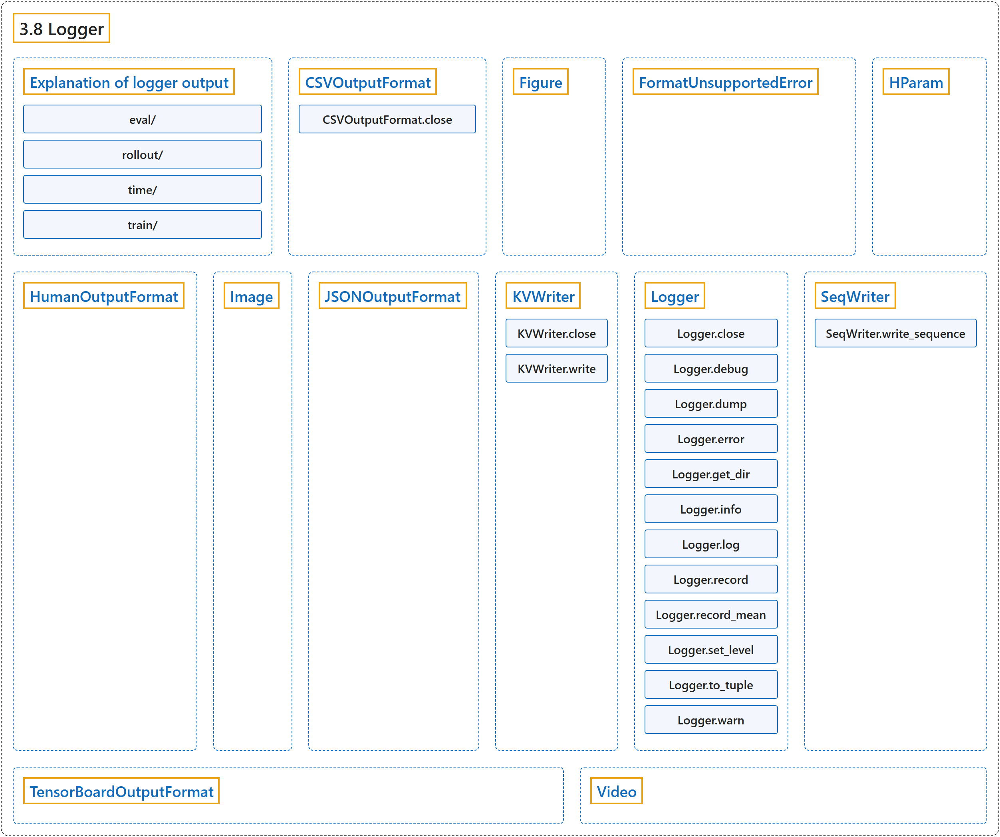

3.8 Logger
Classification

Glossary
| Term | Definition | 中文翻译 | Source |
|---|---|---|---|
| 3.8 Logger 日志记录器 |
(No definition) | （无定义） | Raffin et al., n.d., "Logger" |
| Explanation of logger output 日志输出说明 |
(context) "You can find below short explanations of the values logged in Stable-Baselines3 (SB3)." | （语境）下面给出了对 Stable-Baselines3（SB3）所记录数值的简短说明。 | Raffin et al., n.d., "Explanation of logger output", para. 1 |
| eval/ eval/ 评估 |
(context) "All eval/ values are computed by the EvalCallback." | （语境）所有 eval/ 数值都由 EvalCallback 计算。 | Raffin et al., n.d., "eval/", para. 1 |
| rollout/ rollout/ 采集 |
(No definition) | （无定义） | Raffin et al., n.d., "rollout/" |
| time/ time/ 时间 |
(No definition) | （无定义） | Raffin et al., n.d., "time/" |
| train/ train/ 训练 |
(No definition) | （无定义） | Raffin et al., n.d., "train/" |
| CSVOutputFormat CSVOutputFormat CSV 输出格式 |
"Log to a file, in a CSV format" | 以 CSV 格式记录到文件 | Raffin et al., n.d., "Logger", para. 1 |
| CSVOutputFormat.close close 方法 |
"closes the file" | 关闭文件 | Raffin et al., n.d., "Logger", para. 1 |
| Figure Figure 图表数据类 |
"Figure data class storing a matplotlib figure and whether to close the figure after logging it" | 保存 matplotlib 图表以及记录后是否关闭该图表的图表数据类 | Raffin et al., n.d., "Logger", para. 1 |
| FormatUnsupportedError FormatUnsupportedError 格式不支持错误 |
"Custom error to display informative message when a value is not supported by some formats." | 当某个值不被某些格式支持时，用于显示提示信息的自定义错误。 | Raffin et al., n.d., "Logger", para. 1 |
| HParam HParam 超参数数据类 |
"Hyperparameter data class storing hyperparameters and metrics in dictionaries" | 用字典保存超参数和指标的超参数数据类 | Raffin et al., n.d., "Logger", para. 1 |
| HumanOutputFormat HumanOutputFormat 人类可读输出格式 |
"A human-readable output format producing ASCII tables of key-value pairs." | 一种人类可读的输出格式，生成键值对的 ASCII 表格。 | Raffin et al., n.d., "Logger", para. 1 |
| Image Image 图像数据类 |
"Image data class storing an image and data format" | 保存图像及其数据格式的图像数据类 | Raffin et al., n.d., "Logger", para. 1 |
| JSONOutputFormat JSONOutputFormat JSON 输出格式 |
"Log to a file, in the JSON format" | 以 JSON 格式记录到文件 | Raffin et al., n.d., "Logger", para. 1 |
| KVWriter KVWriter 键值写入器 |
"Key Value writer" | 键值写入器 | Raffin et al., n.d., "Logger", para. 1 |
| KVWriter.close close 方法 |
"Close owned resources" | 关闭所拥有的资源 | Raffin et al., n.d., "Logger", para. 1 |
| KVWriter.write write 方法 |
"Write a dictionary to file" | 把字典写入文件 | Raffin et al., n.d., "Logger", para. 1 |
| Logger Logger 日志记录器 |
"The logger class." | 日志记录器类。 | Raffin et al., n.d., "Logger", para. 1 |
| Logger.close close 方法 |
"closes the file" | 关闭文件 | Raffin et al., n.d., "Logger", para. 1 |
| Logger.debug debug 方法 |
"Write the sequence of args, with no separators, to the console and output files (if you’ve configured an output file). Using the DEBUG level." | 把参数序列不加分隔符地写到控制台和输出文件（如果你配置了输出文件）。使用 DEBUG 级别。 | Raffin et al., n.d., "Logger", para. 1 |
| Logger.dump dump 方法 |
"Write all of the diagnostics from the current iteration" | 写出当前迭代的全部诊断信息 | Raffin et al., n.d., "Logger", para. 1 |
| Logger.error error 方法 |
"Write the sequence of args, with no separators, to the console and output files (if you’ve configured an output file). Using the ERROR level." | 把参数序列不加分隔符地写到控制台和输出文件（如果你配置了输出文件）。使用 ERROR 级别。 | Raffin et al., n.d., "Logger", para. 1 |
| Logger.get_dir get_dir 方法 |
"Get directory that log files are being written to." | 得到日志文件正在写入的目录。 | Raffin et al., n.d., "Logger", para. 1 |
| Logger.info info 方法 |
"Write the sequence of args, with no separators, to the console and output files (if you’ve configured an output file). Using the INFO level." | 把参数序列不加分隔符地写到控制台和输出文件（如果你配置了输出文件）。使用 INFO 级别。 | Raffin et al., n.d., "Logger", para. 1 |
| Logger.log log 方法 |
"Write the sequence of args, with no separators, to the console and output files (if you’ve configured an output file)." | 把参数序列不加分隔符地写到控制台和输出文件（如果你配置了输出文件）。 | Raffin et al., n.d., "Logger", para. 1 |
| Logger.record record 方法 |
"Log a value of some diagnostic Call this once for each diagnostic quantity, each iteration If called many times, last value will be used." | 记录某个诊断量的值 每次迭代对每个诊断量调用一次；如果调用多次，将使用最后一个值。 | Raffin et al., n.d., "Logger", para. 1 |
| Logger.record_mean record_mean 方法 |
"The same as record(), but if called many times, values averaged." | 与 record() 相同，但如果调用多次，则取各值的平均。 | Raffin et al., n.d., "Logger", para. 1 |
| Logger.set_level set_level 方法 |
"Set logging threshold on current logger." | 设置当前日志记录器的日志阈值。 | Raffin et al., n.d., "Logger", para. 1 |
| Logger.to_tuple to_tuple 方法 |
"Helper function to convert str to tuple of str." | 把 str 转换为 str 元组的辅助函数。 | Raffin et al., n.d., "Logger", para. 1 |
| Logger.warn warn 方法 |
"Write the sequence of args, with no separators, to the console and output files (if you’ve configured an output file). Using the WARN level." | 把参数序列不加分隔符地写到控制台和输出文件（如果你配置了输出文件）。使用 WARN 级别。 | Raffin et al., n.d., "Logger", para. 1 |
| SeqWriter SeqWriter 序列写入器 |
"sequence writer" | 序列写入器 | Raffin et al., n.d., "Logger", para. 1 |
| SeqWriter.write_sequence write_sequence 方法 |
"write_sequence an array to file" | 把一个数组按序列写入文件 | Raffin et al., n.d., "Logger", para. 1 |
| TensorBoardOutputFormat TensorBoardOutputFormat TensorBoard 输出格式 |
"Dumps key/value pairs into TensorBoard’s numeric format." | 把键值对输出为 TensorBoard 的数值格式。 | Raffin et al., n.d., "Logger", para. 1 |
| Video Video 视频数据类 |
"Video data class storing the video frames and the frame per seconds" | 保存视频帧和每秒帧数的视频数据类 | Raffin et al., n.d., "Logger", para. 1 |
References
Raffin, A., Hill, A., Gleave, A., Kanervisto, A., Ernestus, M., & Dormann, N.. (n.d.). Logger. Stable-Baselines3 docs (Version 2.9.2a0). Retrieved October 31, 2026, from https://stable-baselines3.readthedocs.io/en/master/common/logger.html